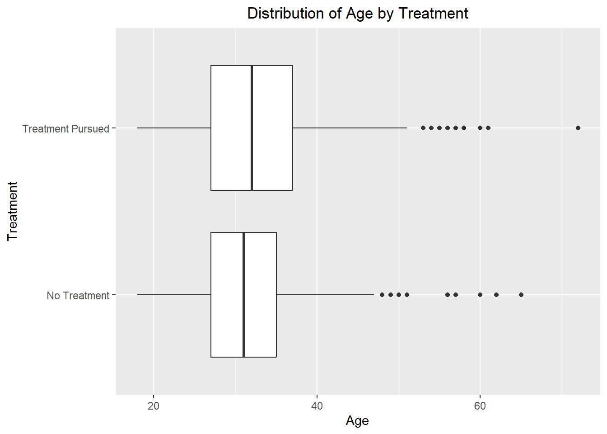
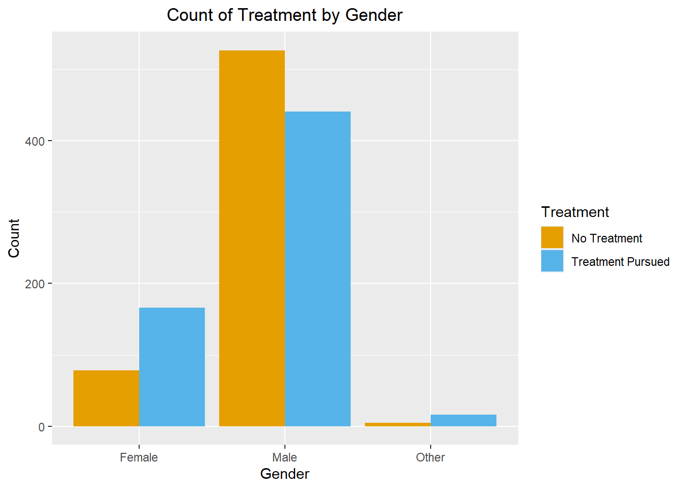
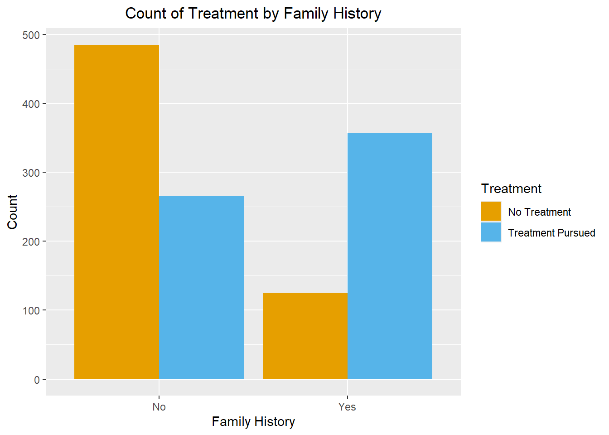
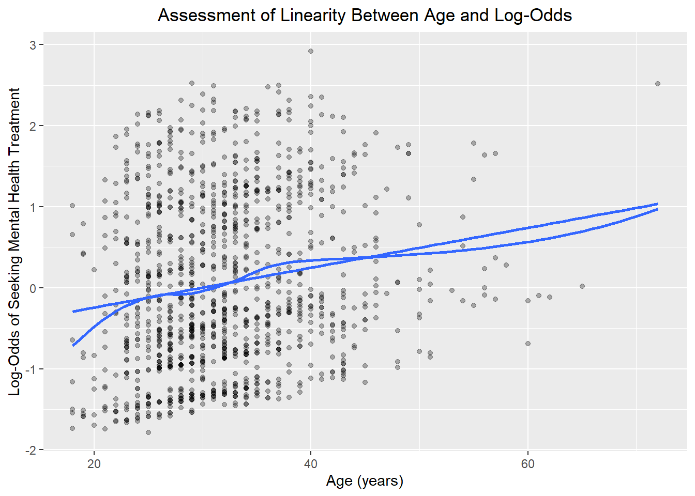

| Variable | Role | Description |
|---|---|---|
| Age | Demographic Predictor | Age of respondent |
| Gender | Demographic Predictor | Gender of respondent |
| family_history | Demographic Predictor | Whether the respondent has a family history of mental illness |
| US_Respondent | Demographic Predictor | Whether the respondent is a US resident |
| self_employed | Workplace Predictor | Whether the respondent is self-employed |
| remote_work | Workplace Predictor | Whether the respondent works remotely at least 50% of the time |
| tech_company | Workplace Predictor | Whether the respondent works for a technology company |
| benefits | Workplace Predictor | Whether the respondent's employer provides mental health benefits |
| wellness_program | Workplace Predictor | Whether the respondent's employer has discussed mental health as part of an employee wellness program |
| seek_help | Workplace Predictor | Whether the respondent's employer provides resources to learn more about mental health issues and how to seek help |
| anonymity | Workplace Predictor | Whether the respondent's anonymity is protected when using mental health or substance abuse treatment resources |
| treatment | Outcome | Whether the respondent has sought treatment for a mental health condition |
Associations Between Demographic and Workplace Characteristics and Treatment Seeking Behavior for Mental Health Issues in Tech Workplaces.
Abstract
Background:
Mental health issues are prevalent in the workplace today and quality of life for individuals with these issues can be improved by seeking out treatment. The technology industry in particular is worth investigating as positions tend to be high stress and results oriented.
Objective:
To investigate the research question: Which demographic and workplace characteristics are associated with seeking treatment for mental health conditions among technology professionals?
Methods:
This cross-sectional analysis explores this question using survey data of IT professionals who self-identify as mentally ill collected by the nonprofit, Open Sourcing Mental Illness in 2014. The raw dataset contains 1,259 rows and 27 columns. After preprocessing, the analytic dataset contains 1,233 rows and 12 columns (2.1% of raw data records removed due to missing values).
Univariable and multivariable logistic regression models were fit to assess associations between workplace and demographic independent variables and treatment seeking behavior. Odds ratios (OR), 95% confidence intervals (CI), and p-values were then interpreted for each predictor.
Results:
Male participants had significantly lower odds of seeking treatment than female participants (OR = 0.46, p < 0.001). Participants with a family history of mental illness had significantly higher odds of seeking treatment than those without (OR=4.80, p < 0.001). Among the workplace characteristics examined, uncertainty regarding employer-provided mental health benefits was the only response category that remained significantly associated with treatment seeking in the multivariable analysis.
Conclusion:
Gender and family history of mental illness were found to be associated with treatment seeking in this survey of tech industry professionals. The different workplace characteristics covered in the survey yielded limited associations of interest with treatment seeking behavior.
Introduction
Mental health disorders are prevalent in the workplace today and can have a pronounced negative impact on employees. Tech workplaces in particular are a high stress environment that can often focus on productivity and producing results while failing to protect the mental health of the individuals who work there. Seeking treatment for mental health conditions can help individuals manage symptoms, improve productivity, and improve their day-to-day quality of life, making treatment-seeking crucial to good workplace mental health. This survey gives us some insight into workers within tech and whether or not they’ve sought treatment for their mental health issues. Understanding which demographic and workplace characteristics are associated with treatment-seeking may help identify populations that are less likely to seek care and inform workplace strategies to better support employees.
Methods
Data Source
The Mental Health in Tech Survey dataset is the result of an online survey conducted in 2014 by Open Sourcing Mental Illness (OSMI). This survey seeks to measure “attitude and frequency of mental health disorders among workers in the Tech industry.” (Open Sourcing Mental Illness, 2014) This survey is readily downloadable via Kaggle (Open Sourcing Mental Illness, 2014).
Data Preprocessing
Columns that don’t relate to demographics of the survey participants or workplace characteristics were removed from the dataset, including: Timestamp, care_options, leave, Mental_health_consequence, Phys_health_consequence, no_employees, Coworkers, supervisor, mental_health_interview, phys_health_interview, mental_vs_physical, and obs_consequence.
The outcome variable treatment was transformed from a categorical feature taking on values “Yes” and “No” to a factor with levels “Yes” and “No” and labels of “Treatment Pursued” and “No Treatment.” Similarly, the columns benefits, wellness_program, seek_help, and anonymity were transformed into factors with levels “No,” “Yes,” and “Don’t know.”
Columns Country and Gender were both categorical variables that took on ~50 values in the raw dataset. US_Respondent was engineered based on Country and is a Yes/No binary categorical variable created as a factor that indicates whether the respondent is from the United States or not. Similarly, Gender was transformed to take on values Male, Female, or Other because the original column allowed the person taking the survey to type in its value (as opposed to multi-select) and contained many low frequency responses. These new columns were created in place of the original with the hope that they’ll provide more clear cut insights when fitting the logistic regression model.
The remaining columns were included in the data for analysis:
Missing Data
Missing data was largely handled by removing the rows or columns with missing values. Due to the low number of missing values across the data this was deemed as the easiest way to address missingness. Erroneous values for age (the one continuous predictor) were identified across the raw dataset through plotting age in a box plot. These values were erroneous as they didn’t fall between 18 and 110 which was a prespecified reasonable interval for being a tech professional. These records were replaced with NA and ultimately removed from the analysis dataset.
Columns with more than 20% missing values (comments, state, and work_interfere) were also removed from the dataset in order to preserve more records for analysis.
Statistical Analysis
The lone continuous independent variable in the data was summarized using the mean and standard deviation. The distribution of this variable was visualized through a box plot. The categorical variables were summarized using counts (N) and percentages. The distribution of these categorical variables was explored in more depth through visualization: mainly using column charts.
Model assumptions were then assessed. Linearity of the logit was assessed by taking the predicted probabilities of the logistic regression model and mapping them to log-odds using the quantile function. The log odds of seeking mental health treatment and the Age predictor were then plotted against each other with a line of best fit.
The independence of observations assumption should be met as each person only has one corresponding response supposedly. The thing to watch for with this assumption would be whether multiple people from the same workplace were taking this survey, but there’s no way to confirm this or identify individuals with the data provided.
The assumption of little or no multicollinearity between the independent variables was then investigated. Pairwise contingency tables were created for all combinations of: benefits, wellness_program, seek_help, and anonymity. These columns were chosen to investigate since my domain knowledge suggests that a workplace that underwent one of these measures would also implement the rest. The variance inflation factor (VIF) and adjusted GVIF were also calculated for each variable; and were compared against a prespecified threshold of five (chosen as a threshold for potentially problematic multicollinearity).
Univariable and multivariable logistic regression models were then fit for all previously mentioned independent variables with treatment as the outcome. The odds ratio (OR) with 95% confidence interval (CI) and p-values were calculated for each variable for both the univariable and multivariable models. These OR’s, CI’s, and p-values were then displayed in a table stratified by univariable model versus multivariable model for each predictor.
The Hosmer-Lemeshow goodness of fit test was used to indicate whether there was statistically significant evidence of lack of fit for the multivariable model. Outside of this the performance of the multivariable model wasn’t explored extensively as the focus of the project is to assess and interpret the association of predictors with seeking treatment. This association was explored primarily using the OR’s and p-values of the models.
Results
Analytic Sample and Missing Data
The raw dataset contains 1,259 rows and 27 columns. The 8 rows with missing ages and 18 with missing self_employed values were removed from the raw data (2.1% of raw data removed). After preprocessing, the analytic dataset is 1,233 rows and 12 columns.
| Characteristic | No Treatment N = 6101 |
Treatment Pursued N = 6231 |
|---|---|---|
| Age | 32 (7) | 33 (8) |
| Gender | ||
| Female | 78 (13%) | 166 (27%) |
| Male | 527 (86%) | 441 (71%) |
| Other | 5 (0.8%) | 16 (2.6%) |
| family_history | 125 (20%) | 357 (57%) |
| US_Respondent | 334 (55%) | 401 (64%) |
| self_employed | 67 (11%) | 75 (12%) |
| remote_work | 173 (28%) | 192 (31%) |
| tech_company | 507 (83%) | 502 (81%) |
| benefits | ||
| Don't know | 251 (41%) | 149 (24%) |
| No | 190 (31%) | 177 (28%) |
| Yes | 169 (28%) | 297 (48%) |
| wellness_program | ||
| Don't know | 102 (17%) | 80 (13%) |
| No | 415 (68%) | 409 (66%) |
| Yes | 93 (15%) | 134 (22%) |
| seek_help | ||
| Don't know | 191 (31%) | 164 (26%) |
| No | 318 (52%) | 314 (50%) |
| Yes | 101 (17%) | 145 (23%) |
| anonymity | ||
| Don't know | 438 (72%) | 364 (58%) |
| No | 27 (4.4%) | 34 (5.5%) |
| Yes | 145 (24%) | 225 (36%) |
| 1 Mean (SD); n (%) | ||
The majority of survey respondents were male for both treatment (71% male) and no treatment (86% male) groups. The majority of respondents were from the US for both treatment (55% USA) and no treatment (64% USA) groups. Less then a third of respondents work remotely, with 28% of the no treatment group and 31% of the treatment pursued group reporting working remotely.
The distribution of age stratified by whether treatment has been pursued or not was visualized using side by side box plots. The distribution of age was similar between these two groups, with a mean of 32 for those who haven’t sought treatment and 33 for those who have (Table 2).

Figure 2 displays treatment-seeking status stratified by gender. Treatment seeking was more frequent among female and other respondents, while male respondents reported not having sought treatment the majority of the time.

Figure 3 displays treatment-seeking status stratified by family history of mental illness. Treatment seeking was more frequent among respondents with a family history of mental illness, while respondents without a family history of mental illness more frequently reported not having sought treatment.

Model Assumptions
The adjusted GVIF values are below the predetermined threshold of 5, so the assumption of no multicollinearity is satisfied for the sake of fitting the model.
| Predictor | GVIF | Degrees of Freedom | Adjusted GVIF |
|---|---|---|---|
| Age | 1.12 | 1 | 1.06 |
| Gender | 1.06 | 2 | 1.01 |
| self_employed | 1.23 | 1 | 1.11 |
| family_history | 1.02 | 1 | 1.01 |
| remote_work | 1.17 | 1 | 1.08 |
| tech_company | 1.05 | 1 | 1.03 |
| benefits | 2.18 | 2 | 1.22 |
| wellness_program | 2.18 | 2 | 1.22 |
| seek_help | 2.65 | 2 | 1.28 |
| anonymity | 1.29 | 2 | 1.07 |
| US_Respondent | 1.31 | 1 | 1.15 |
Figure 4 shows the relationship between age and log-odds of seeking mental health treatment in order to assess linearity of the logit. The relationship is roughly linear so the assumption is reasonably satisfied.

Logistic Regression Models
Univariable and multivariable model odds ratios (with 95% CI and p-value) are displayed for each predictor below, stratified by whether they were from the univariable or multivariable model.
| Characteristic |
Univariable
|
Multivariable
|
||
|---|---|---|---|---|
| OR (95% CI) | p-value | OR (95% CI) | p-value | |
| Age | 1.02 (1.00, 1.04) | 0.010 | 1.02 (1.00, 1.04) | 0.022 |
| Gender | ||||
| Female | — | — | ||
| Male | 0.39 (0.29, 0.53) | <0.001 | 0.46 (0.33, 0.64) | <0.001 |
| Other | 1.50 (0.57, 4.73) | 0.4 | 1.68 (0.58, 5.65) | 0.4 |
| self_employed | ||||
| No | — | — | ||
| Yes | 1.11 (0.78, 1.58) | 0.6 | 1.08 (0.70, 1.66) | 0.7 |
| family_history | ||||
| No | — | — | ||
| Yes | 5.21 (4.05, 6.72) | <0.001 | 4.80 (3.69, 6.26) | <0.001 |
| remote_work | ||||
| No | — | — | ||
| Yes | 1.13 (0.88, 1.44) | 0.3 | 1.09 (0.81, 1.46) | 0.6 |
| tech_company | ||||
| No | — | — | ||
| Yes | 0.84 (0.63, 1.13) | 0.2 | 1.00 (0.72, 1.41) | >0.9 |
| benefits | ||||
| No | — | — | ||
| Yes | 1.89 (1.43, 2.49) | <0.001 | 1.49 (1.00, 2.22) | 0.051 |
| Don't know | 0.64 (0.48, 0.85) | 0.002 | 0.64 (0.44, 0.92) | 0.016 |
| wellness_program | ||||
| No | — | — | ||
| Yes | 1.46 (1.09, 1.97) | 0.012 | 0.90 (0.58, 1.38) | 0.6 |
| Don't know | 0.80 (0.58, 1.10) | 0.2 | 0.82 (0.54, 1.24) | 0.4 |
| seek_help | ||||
| No | — | — | ||
| Yes | 1.45 (1.08, 1.96) | 0.014 | 0.89 (0.56, 1.39) | 0.6 |
| Don't know | 0.87 (0.67, 1.13) | 0.3 | 1.03 (0.72, 1.48) | 0.9 |
| anonymity | ||||
| No | — | — | ||
| Yes | 1.23 (0.71, 2.12) | 0.5 | 1.07 (0.57, 2.00) | 0.8 |
| Don't know | 0.66 (0.39, 1.11) | 0.12 | 0.72 (0.39, 1.31) | 0.3 |
| US_Respondent | ||||
| No | — | — | ||
| Yes | 1.49 (1.19, 1.88) | <0.001 | 1.04 (0.77, 1.39) | 0.8 |
| Abbreviations: CI = Confidence Interval, OR = Odds Ratio | ||||
Male participants had significantly lower odds of seeking treatment than female participants (OR = 0.46, p < 0.001). Participants with a family history of mental illness had significantly higher odds of seeking treatment then those without (OR=4.80, p < 0.001). Age exhibited a statistically significant association with treatment seeking (OR=1.02, p=.022). In the univariable analysis, both “Yes” and “Don’t know” responses had significantly different odds of seeking treatment compared with those whose employers did not provide benefits. After adjustment for other demographic and workplace characteristics (in the multivariable model), the association remained statistically significant for respondents who were unsure whether their employer provided mental health benefits, but not for those whose employers reported providing benefits. We see that US respondents had significantly greater odds to seek treatment; but after including the other predictors we no longer saw a significant association.
The Hosmer-Lemeshow goodness of fit test returned a p-value of 0.3762, which doesn’t indicate a statistically significant lack of fit.
Discussion
Males were significantly less likely to have pursued treatment than female respondents in the survey. One possible explanation for this is the stigmatization of mental health in our society and gender norms suggesting that men shouldn’t ask for help or be dealing with mental health issues in the first place.
The increased odds of respondents with a family history of mental health issues seeking treatment was also worth noting. This could potentially be influenced by an increased awareness of these respondents regarding mental health issues due to their proximity to them growing up. The previous generation who dealt with these issues may also be more likely to create an atmosphere that encourages acknowledging and seeking help for these issues.
Age also had a statistically significant association with treatment seeking. This was to be expected, as the older a respondent is the more time they’ve had to seek out treatment.
Certain variables such as whether a workplace offers mental health benefits were significant for the univariable regression model but not in the multivariable model. This could potentially be contributed to confounding or correlation with other predictor variables. Correlation has been assessed using multiple methods here, but a confounding analysis could be valuable future work.
Limitations:
It’s worth noting that causality can’t be claimed with the associations observed here because this analysis utilizes data from a cross sectional survey. This survey data naturally lacks a concrete study design with randomized assignment and longitudinal data to establish cause and effect (lack of temporal precedence).
Workplace characteristics only demonstrated one statistically significant association in the multivariable model; between respondents who were unsure whether their employer provided mental health benefits and those whose workplace doesn’t. One potential explanation for this scarcity of significant associations between workplace characteristics and treatment is that the different characteristics seem closely related to each other in nature. This could result in some confusion for survey participants when answering, as benefits at work are often a nebulous topic to begin with.
A third limitation is that this data was self reported and could result in entry errors. This was exhibited with the gender category, which took on ~50 values, many of which were just misspellings of Male or Female. A tendency of online survey participants to attempt to finish the survey quickly and opt for the “Don’t know” multi-select option could result in potential bias in responses.
There’s also potential for sampling bias with this survey. Survey respondents could share this survey with their coworkers or other tech professionals that they know. This survey is totally voluntary through OSMI and those who interact with OSMI’s content aren’t necessarily representative of all workers in the tech industry.
References
- Open Sourcing Mental Illness. (2014). Mental health in tech survey [Data set]. Kaggle. https://www.kaggle.com/datasets/osmi/mental-health-in-tech-survey